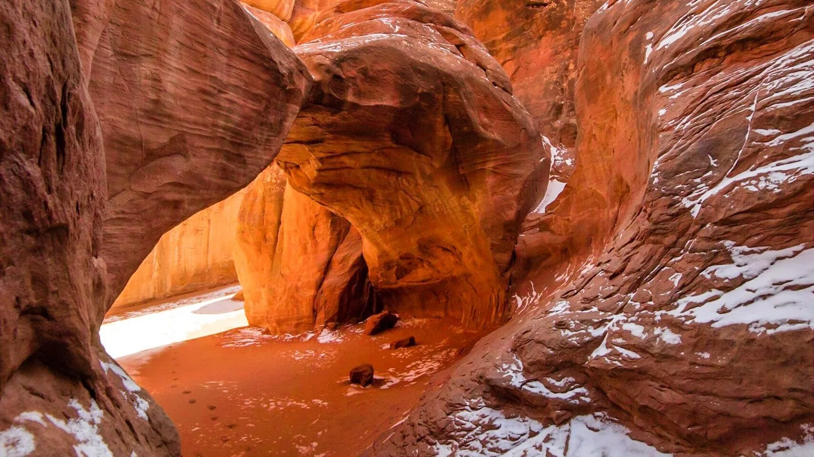

SOURCE-REVIEWED · Arches National Park
Sand Dune Arch
Follow a sandy passage between tall sandstone fins to find an arch tucked out of sight. The short approach feels like discovering a little outdoor room, with textures and shapes worth lingering over. This guide covers Sand Dune Arch and back only; continuing to Broken Arch makes a different, longer outing.

Winter scene: snow and ice can make the rock and trail slippery. This photograph does not report current conditions.
Photo: NPS / Kayla Vogt · Photo credits- Location
- Arches National Park
- Experience
- First Steps
- Landscape
- Desert & red rock
- Planning seasons
- Spring, Fall
- Distance
- 0.4 miles
- Elevation gain
- NPS lists 0 ft elevation change; cumulative gain is not separately published
- Approximate duration
- 15–30 minutes (NPS)
- Route type
- Out and back to Sand Dune Arch only
- Trail surface
- Deep sand and bedrock; a boulder constricts a narrow passage
- Terrain
- Sand, Rocky ground
- Estimated difficulty
- Easy (NPS), with deep sand and a narrow passage
- Trailhead
- Sand Dune Arch parking area, Arches National Park
Why this hike is worthwhile
Follow a sandy passage between tall sandstone fins to find an arch tucked out of sight. The short approach feels like discovering a little outdoor room, with textures and shapes worth lingering over. This guide covers Sand Dune Arch and back only; continuing to Broken Arch makes a different, longer outing.
Know Before You Go
Preparation
Wear shoes suited to deep sand and rock. Bring water even for a short walk, and turn back if the narrow passage or sandy footing does not suit your group. The route is not wheelchair accessible according to NPS.
Seasonal hazards
Do not climb or jump from the arch. Deep sand, rock, and the narrow passage can be awkward. Summer heat and sun exposure, sudden storms, and winter snow/ice can change the outing substantially.
Seasons and weather
Spring and fall are the park’s temperate seasons, used here as beginner planning filters. Summer temperatures often exceed 100°F, and even small amounts of winter snow or ice can make trails impassable. Filters do not imply current access.
Carry water and sun protection. Late-summer monsoon storms can bring flash floods, and rain or snow can close roads. Sheltering between sandstone walls does not make the approach or route safe during severe weather.
Fees
A park entrance fee or qualifying pass is required. NPS lists a standard private-vehicle entrance pass at $30; check the current fee schedule, any applicable additional fees, and entrance requirements for your dates.
Access and restrictions
Dogs are not allowed on this trail; service animals follow NPS rules. Do not climb on arches, damage rock, or leave designated routes. Check the park’s current timed-entry/reservation requirements and alerts for your dates rather than relying on a prior year’s rules.
Official information and verification
- NPS: Sand Dune Arch route, time, elevation change, and pet rules
- NPS: physical accessibility, deep sand, bedrock, and narrow passage
- NPS: Arches weather and seasons
- NPS: Arches safety
- NPS: Arches fees and passes
Last source review: 2026-10-21
NPS lists 0.4 mile round trip, 15–30 minutes, and 0 feet of elevation change. Elevation change is not presented as a measured cumulative gain: the gain filter remains unknown, and the source wording is shown. Broken Arch distances vary by route and are intentionally excluded.
Build your trail confidence ↗